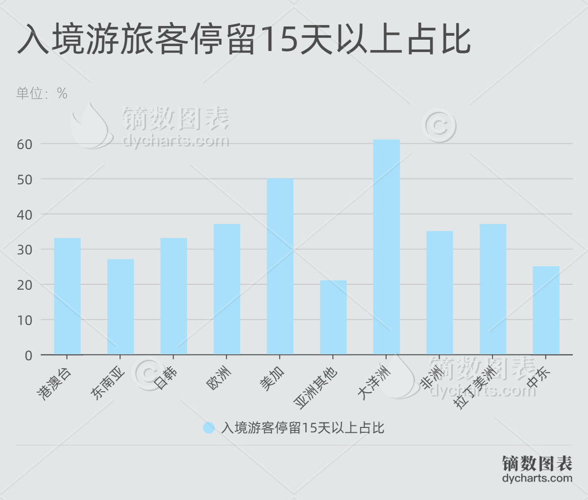

2024年夏天，“City不City啊”一词走红中外社交媒体网络,其起因是外国博主“保保熊”带着妹妹来中国旅游，和妹妹聊天时总会用魔性的语调问一句“city不city啊～”，由于其声音过于洗脑，因此成为许多网友争相模仿的对象。“保保熊”表示很开心大家一起“City”起来了，他表示“City”不仅代表着目的地的城市化程度，更代表一种让人感到“刺激”、“令人开心和享受”的情绪。
外交部发言人评论“City不City啊”走红网络时，表示很高兴看到外国朋友们在中国享受美景美食，亲身感受生动真实的中国。
外国人来华的“China travel”中国行在今年“喷井式爆发”，中国故事逐渐完成由“他叙”向“自叙”转变，缘何如此？
伴随着144小时免签政策的逐步推广，“China Travel"开始走向进行时
给“China Travel”带来新机遇

通常来说，L签申请时间会在30天左右
这意味着
你需要提前一个月准备一系列材料
还需要提前规划好你的行程安排
而且一旦有什么突发情况发生
这一切都可能白白准备了......

但是！144h过境免签政策
可以让你来一场“说走就走的旅行”
是不是很心动啊

好多外国人啊，一出门还以为自己出国了
出个门包里有3个脆脆鲨和一百块钱，回来3个脆脆鲨不见了
全是拼多多新用户，能让他们帮忙砍一刀吗？
从中国回来的戒断反应
34小时铁腚大冒险，我以为他俩预算太低，结果剪头30小费给了170
小孩哥：不儿也没人告诉我中国人会魔法啊
当我在拉萨街头看到一群又一群的歪果仁的时候我就知道事情不一般了
外国人：长城city不 city
大家都在搜144小时等于多少天
印尼飞广州的南航，围了一圈儿老内，我成老外了
视频源于自Youtobe
2024年“China Travel”在外网爆火，有关于“China Travel”的视频播放量超过60000000次，拍摄在中国旅游的视频成为了外国博主的“流量密码”，“China Travel”正式在海外火出了圈。
在“China 144”政策的加持下，外国游客们纷纷来中国各地城市旅游，“city”不“city”呀的背后，是外籍游客对于中国城市化速度之快的感慨，也是中国经济高速发展的重要佐证。
政策实施前后的外国人来华数量对比
总体来看，从2023年开始，中国出入境人员较疫情期间已有初步的回升，而外国人出入境人数也在逐步上升当中。2024年上半年的外国人出入境人数与2023年全年的外国人出入.境人数相差不大，其出入境人数增长程度在2019至2020的出入境人数猛跌对比下尤为明显。可见，144h政策对于外国人进入中国有着重要的促进作用。
而下面这张图，就更有趣了！
2024年上半年外国人出入境的人数超过了2023年的一半
这意味着，2024年外国人来华数量会高于2023年
这也给中国旅游业带来了更大的发展机遇

国家旅游局的外国游客消费数据
而从旅游收入中
更可以看到的是
从2020年起旅游总收入不断提升
可见，来华外国旅客数量增加
更加带动了中国旅游业的回温

入境中国的游客带来的收入高于在国内旅游的游客带来的收入，在我国旅游收入中占比日益增加，入境旅游对于我国旅游业回温带来的贡献日益攀升。
随着我国免签政策的放开，越来越多的外国游客认识到了来华旅游的便利，兴趣高涨，形成了来华旅游体验文化的潮流。携程数据显示，2023年二季度享受过境免签政策的游客数里较一季度增长28%。这种增长趋势表明，免签政策有效刺激了外国游客的来华意愿，推动了中国旅游市场的复苏。
根据最新的市场研究报告，试点国家外籍游客中
亚洲游客占比高达40%-45%，这一政策为这些近邻国家的游客提供了便捷的短期旅行机会，离家近且文化相近，便于出行。
欧洲国家的游客，如德国、英国和法国，占比30-35%，他们对中国丰富的文化和历史有着浓厚兴趣，有强烈意愿进行跨文化交流。
美洲、大洋洲和非洲的游客也有显著增长，这一政策的便利性促进了国际游客的短期入境。

入境游旅客停留15天以上的占比图表也充分说明，144小时免签政策显著提升了中国对国际游客的吸引力，尤其是对那些计划深入了解中国文化和自然景观的旅客，然而，对于那些停留时间长于144小时的旅客来说，现有政策可能不足以满足他们的需求，适当延长免签停留时间，如从144小时延长至10天或更长，可能会吸引更多的长途旅客进行深度游。
按照中国人的喜好
出国游玩更喜欢“阖家欢乐”
而外国人就不同了
按照图表显示更多的入境游人群会选择“一人行”
独自在中国的城市中漫步
领略中华文化文化之美
在年龄分布上来看
根据Travel China Guide和Adventure Begins Here-TourRadar网数据表明：近年来，来华游客年长者占比有所提升，中年旅客占比有所降低,在外国人来华数量增加的趋势下，体现出越来越多外国人——尤其是中老年人对中国感兴趣程度日益加深。
而在旅行方式的选择上：
导游带来的安全感是无可比拟的，能够给外国旅客提供更为细致的服务，自然而然成为大量来华旅游的国际游客的首选。
首次来华的游客、年长的游客以及不熟悉当地语言和文化的人，跟团游明显更受欢迎，这些旅游团提供了便利、安全和全面的安排，吸引着那些寻求零麻烦体验的人，大家对旅游团好评不断。
而Travel China Guide表明经验丰富的旅行者更喜欢自助或独立旅游，自己制定行程以获得更深入、更真实的旅游体验。
哪里最CITY?
外国旅客在中国乘飞机出行的十大热门目的地中，广州居首，其次则为上海、北京、深圳、成都、杭州、西安、重庆、昆明、青岛。
（找到地图标注的形式，例如下图的优秀作品）
如何能CITY?
伴随着经济水平的不断发展
外国人入境旅游消费模式和内容也在不断升级
自2023年底以来，与中国实现互免签证的14个国家的入境游客，2024年上半年通过支付宝海外版进行的消费金额同比增长了15倍。
（这个最好也能用图表表示）
这意味着，入境游客已经逐步改变自己在中国的消费模式，也给在中的衣食住行带来更大便利。
China travel的走红也为中国市场注入活力、带来机遇。今年上半年，全国各口岸入境外国人1463.5万人次，同比增长152.7%。其中通过免签入境854.2万人次，占比52%，同比增长190.1%。
中国正在重新成为外国人的热门目的地
China travel正在成为中国对外展示和交流的重要窗口。
如何更CITY？
体验中国文化、观光、度假为外籍游客来华的三大主要目的，不仅得益于中国上下五千年的灿烂文化，也更要归功于144 小时过境免签政策，够使中国能展示形象名片，吸引更多国际友人来到中国感受中华文化的魅力。
同时，免签政策的不断优化也会鼓励更多外国人来华经商、工作、学习、生活，推动经贸、人文合作，促进各类要素跨国流动。
外国游客在中国最爱体验的内容是自然风光和历史遗迹。据相关新闻报道显示：长城、故宫、兵马俑是外国旅客到中国必打卡的三大景区；上海豫园、成都大熊猫繁育研究基地、杭州西湖、湖南张家界国家森林公园等景区也受到外国旅客喜爱。除此之外，外国游客深爱浙江义乌，有外国博主在义乌买了许多体育周边产品，笑称“义乌的奥运气息仅次于巴黎”。
然而
外国人的“中国行”
总会遇到各种各样的问题......
而最大的一个问题便是支付不便
账号“Two Mad Explorers”的一对德国/爱尔兰夫妇，利用中国对这两个国家的免签政策，在半年内已经4次入境中国，从北京、上海，一路西行到乌鲁木齐、成都、重庆，目前正在探索广州，他们透露，接下来将前往云南、青岛等地。然而，除了称赞中国的便利交通、先进基础设施和高度安全，他们也在视频中展示了频繁遇到的支付不便问题。

在此前3年中，二维码、小程序等非接触、深度实名制的服务形式已高度普及，这让存在一定语言障碍，又无法通过强实名方式有效绑定身份的外国个人游客，体会到很大的“文化冲击”。
据此前媒体报道，在入境业务恢复不久的2023年5月，上海市政府参事课题组开展了一项关于提升入境人士境内支付便利度的调查。课题组领衔人顾晓敏在牵头调研时发现，国际游客一般希望用信用卡支付或者是近场支付，基本上不愿意用联网的移动支付。
现金支付找零难。随着移动支付的快速发展，国内使用现金支付的人数越来越少，境 外来华人员除了刷卡困难之外，现金使用也不方便。一是取现不方便。境外来华人员 进入中国时，需要兑换一些人民币以应不时之需。但可以兑换外币的银行网点不多， 不是每一家银行网点都能实现，有时需要跑多家银行才能成功兑换。此外，近些年来 我国ATM机数量逐年减少,且多数ATM机也不具备外卡取现功能，即使具备,外卡取现也只能取百元大钞，没有小面额纸币。二是商户零钱配备不足。商户出于防 范假币、找零麻烦等实际需求减少现金收取甚至不收现金，导致配备现金不多。境外 来华人员在购买商品时，由于不会适用移动支付，有时会遇到想付现金，但商户没有 足够的零钱可找的窘况。
与国外相比，在中国，银行卡线下支付还没来得及充分渗透，就被移动支付所替代，个人支票、旅行支票之类的业务更是被银行卡乃至手机银行账户直接跳过，因而近场支付在欧美金融体系下的硬件成本优势，反而在中国国内的场景下无从发挥。
而除了上述提到的“支付宝海外版”之外
多地也为外籍旅客来华所遇到的问题
做出多重举措来解决
以北京为例
为提升外籍乘客地铁出行支付便利性，6月1日起，北京地铁所辖17条线路335座车站完成了POS机铺设，外籍乘客可通过POS机，使用外国银行卡支付购票乘车。近期，持万事达等外卡刷卡过闸、刷卡购买单程票、补票等服务也将逐步实现。同时，为配合一卡通国际卡BEIJING PASS顺利上线，地铁车站正在进行现场测试，后续预计在“七站两场”（七大火车站、两座机场）地铁站内面向外籍人士发售，方便外国朋友持卡在北京轨道交通刷闸乘车。
除此之外，北京地铁公司通过开展英语专项培训，培养英语小教员，提升客运人员双语服务能力，并统一编制工作人员外语学习手册更好服务外籍游客。
在此基础上，为给外籍乘客提供更加准确、精细、丰富的信息，北京地铁公司在8座车站试点配置了多语种翻译机。
此外，在部分热门车站，站点适时启用或切换新增的英文广播，有效减少外籍乘客问询次数。
（北京分布翻译机的路线图）
正如外交部发言人评论“City不City啊”走红网络时表示“中国就在这里，欢迎大家来”。144小时免签政策的未来展望是积极向好的。随着政策适用范围的不断扩大、政策内容的持续优化以及其对旅游业、文化交流和经济发展的积极推动作用，预计这一政策将在未来发挥更加重要的作用，中国行将如此行！
参考内容：
https://www.globaltimes.cn/page/202407/1316093.shtml
https://mp.weixin.qq.com/s/jfUwN5BWgYGhzQOj8lCCUg
https://www.mct.gov.cn/whzx/whyw/202303/t20230301_939436.htm
https://data.worldbank.org/indicator/ST.INT.XPND.CD?locations=CN
https://www.china-briefing.com/news/chinas-tourism-in-2023-outlook-trends-and-opportunities/
https://english.www.gov.cn/archive/statistics/202310/28/content_WS653cf044c6d0868f4e8e0c2b.htm
队长：唐如婧（四川大学文学与新闻学院）
队员：王潇（四川大学计算机学院）、李怡然（四川大学文学与新闻学院）、王淑娴（四川大学文学与新闻学院）、简璐（四川大学文学与新闻学院）
指导老师：刘娜（四川大学文学与新闻学院）